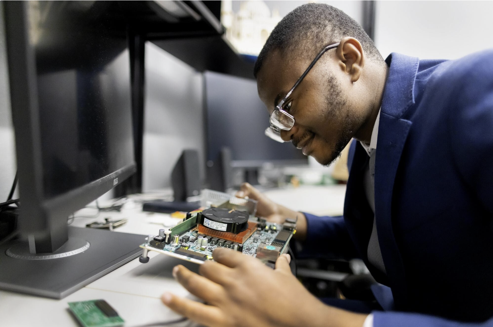

Built by someone who wouldn't accept the tradeoff

Solving a problem the industry had accepted as unavoidable
Fluid Silicon was founded by Nhlanhla Mavuso, a graduate of the University of Pennsylvania's Vagelos Integrated Program in Energy Research (VIPER), an interdisciplinary program jointly run by Penn's School of Arts & Sciences and School of Engineering and Applied Science.
The problem was straightforward but expensive: chips are engineered to a fixed, conservative average that ignores how they actually perform once deployed, wasting energy and performance at scale. Fluid Silicon's platform lets reconfigurable chips monitor their own condition in real time and operate closer to their real potential, rather than that fixed average.
Guided by leading researchers in reconfigurable computing
Fluid Silicon's technical direction is shaped by two advisors from the University of Pennsylvania: Dr. André DeHon and Dr. Jing (Jane) Li.
Dr. DeHon is the Oliver C. Boileau Jr. and Nan Eleze Boileau Professor of Electrical Engineering at Penn, a Fellow of both the ACM and IEEE, and a member of the IEEE Reconfigurable Computing Hall of Fame and the National Academy of Inventors. His research on reconfigurable computing and FPGA architecture, developed over decades through Penn's Implementation of Computation Group, shaped the technical foundation behind Fluid Silicon's approach.
Dr. Li is an Eduardo D. Glandt Faculty Fellow and a recipient of the NSF CAREER Award and DARPA's Young Faculty Award, and holds more than 40 issued and pending patents. Her research spans memory-centric computing, hardware accelerators, and system support for FPGA-based computing.
President's Sustainability Prize
In 2026, Nhlanhla was awarded Penn's President's Sustainability Prize for Fluid Silicon, one of the largest awards of its kind in higher education. The prize includes $100,000 in project funding and a $50,000 living stipend to support the project after graduation.
"Fluid Silicon's adaptive approach to chip performance exemplifies Penn's strength in applied innovation and offers a scalable path to greater efficiency and sustainability," said Penn President J. Larry Jameson.
Scaling the technology, wherever it's needed
Fluid Silicon has already demonstrated its technology on real commercial FPGAs. The next phase is deploying it across aerospace, hyperscale cloud, telecom, and finance, the industries where energy waste and reliability matter most, and growing the technical team to get there.
Every chip running closer to its real potential is a step toward the world we're building: computing that scales without scaling its energy footprint.